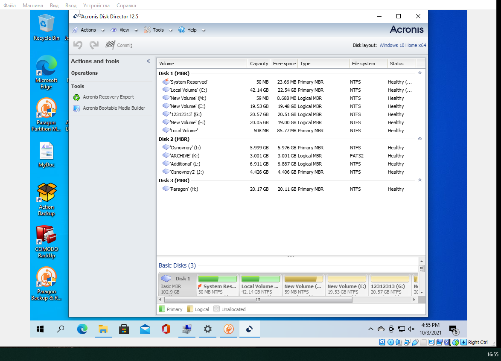

Выбор файловой системы и разметка жесткого диска
Файловая система — порядок, определяющий способ организации, хранения и именования данных на носителях информации в компьютерах, а также в другом электронном оборудовании: цифровых фотоаппаратах, мобильных телефонах и т.д. Файловая система определяет формат содержимого и способ физического хранения информации, которую принято группировать в виде файлов. Конкретная файловая система определяет размер имен файлов (и каталогов), максимальный возможный размер файла и раздела, набор атрибутов файла. Некоторые файловые системы предоставляют сервисные возможности, например, разграничение доступа или шифрование файлов.
Основными функциями файловой системы являются:
1. Размещение и упорядочивание на носителе данных в виде файлов;
2. Создание, чтение и удаление файлов;
3. Назначение и изменение атрибутов файлов;
4. Защита файлов при системном сбое.
Технологии постоянно находятся в развитии. Сегодня уже есть устаревшие файловые системы. На данный момент для работы с внешними накопителями и жесткими дисками используется несколько основных видов файловых систем:
Файловая система FAT32 поддерживает диски до 8 терабайт и размер одного файла до 4Гб.
Сейчас FAT32 активно вытесняется более продвинутой системой NTFS по причине ее большей надежности к сохранности и защите данных. К тому же последние версии ОС Windows просто не дадут себя установить. Программа установки потребует отформатировать раздел в NTFS.
Файловая система NTFS поддерживает работу с дисками объемом в сотни терабайт и размером одного файла до 16 терабайт.
Разметка жесткого диска — это разделение общего пространства диска на логические разделы, которые могут быть видны в операционной системе .
Преимущества разделения жесткого диска:
ВЫПОЛНЕНИЕ ЗАДАНИЯ "РАЗМЕТКА ЖЕСТКОГО ДИСКА"
При выполнении задания жесткий диск разбивался на разделы с помощью ПО «Paragon Partition Manager» и «Acronis Disk Director». Задание заключалось в разбиении двух дисков на 2 основных раздела и 1 дополнительный, в пределах которого создаются 2 логических диска.
1. PARAGON PARTITION MANAGER
Разметка диска в данной программе происходит с помощью меню (Рисунок 1.1). Программа представляет пользователю возможность выбора метки раздела, файловой системы, а также позволяет сделать раздел как основным, так и дополнительным. Параметры выделения места для раздела можно задавать как ползунком, так и введением значения напрямую. Программа отображает разделы диска до операции и после. Результат работы представлен на рисунке 1.2.
Рисунок 1.1 - Окно разметки диска
Рисунок 1.2 - Результат разметки
Проверить итоговый формат файловых систем разделов можно в данном ПО с помощью перехода к свойствам разделов. Окно с описанием одного из них представлено на рисунке 1.3.
Рисунок 1.3 - Свойства раздела с меткой «Архив»
2. ACRONIS DISK DIRECTOR
В программе Acronis Disk Director выполнялась аналогичная задача. Начальное меню программы перед разметкой изображено на рисунке 2.1.
Рисунок 2.1 - Начальное меню программы
Алгоритм создания разделов дисков ничем не отличается от предыдущего варианта. Программа наглядно показала результат создания нужных разделы и дисков и их форматирование под данные заданием файловые системы (Рисунок 2.2).
Рисунок 2.2 - Результат разметки посредством Acronis Disk Director
3. ИТОГИ
В ходе выполнения данной работы я научилась работать с программами по разметке дисков, применила знания о файловых системах, научилась работать со специализированными программами по разметке дисков.